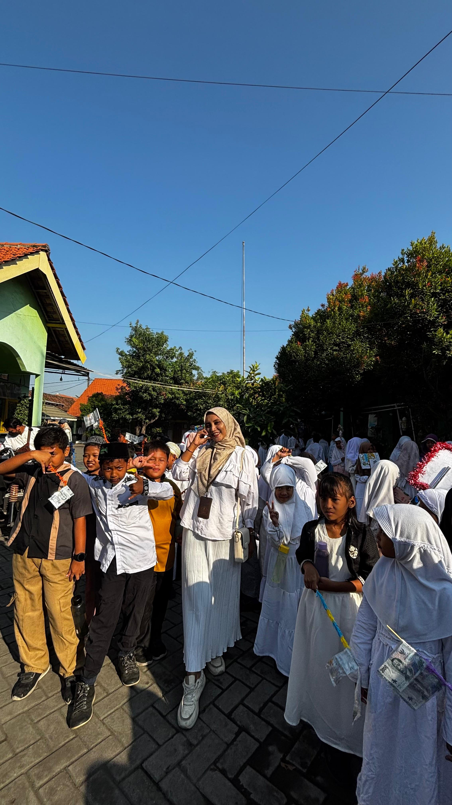
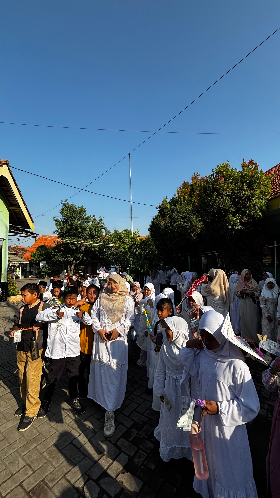

Pawai Tahun Baru Islam
Dalam rangka menyambut datangnya Tahun Baru Islam 1 Muharram 1448 H, SDN Kebonagung 1 Sukodono menggelar kegiatan pawai yang berlangsung dengan penuh semangat, keceriaan, dan nuansa religius. Kegiatan ini menjadi salah satu momen istimewa bagi seluruh warga sekolah untuk menyambut tahun baru Hijriah sekaligus menanamkan kecintaan terhadap nilai-nilai keislaman sejak dini.
Pawai bukan sekadar berjalan bersama, tetapi menjadi momentum untuk mengajak seluruh peserta didik mengawali tahun baru dengan tekad, akhlak mulia, semangat belajar, dan perilaku yang semakin baik.
Para peserta didik mengikuti pawai dengan penuh antusias. Beragam busana bernuansa Islami, atribut menarik, serta ekspresi ceria menghiasi kegiatan. Dengan penuh semangat, para peserta berjalan bersama sambil membawa pesan-pesan positif tentang Tahun Baru Islam.
Suasana semakin meriah dengan kebersamaan antara peserta didik, guru, dan seluruh warga sekolah. Kegiatan ini tidak hanya menjadi sarana untuk memperingati Tahun Baru Islam, tetapi juga menjadi kesempatan untuk mempererat tali silaturahmi dan membangun karakter peserta didik yang religius, percaya diri, disiplin, serta peduli terhadap sesama.
Keseruan Pawai


Makna Kegiatan
Peringatan 1 Muharram mengajarkan bahwa pergantian tahun merupakan kesempatan untuk melakukan refleksi dan memperbaiki diri. Melalui kegiatan pawai, peserta didik diajak memahami bahwa hijrah tidak hanya berarti berpindah tempat, tetapi juga berusaha meninggalkan kebiasaan yang kurang baik menuju kebiasaan yang lebih positif.
Religius
Menumbuhkan kecintaan terhadap nilai-nilai Islam.
Kebersamaan
Mempererat persaudaraan dan silaturahmi.
Semangat
Membangun tekad untuk menjadi pribadi yang lebih baik.